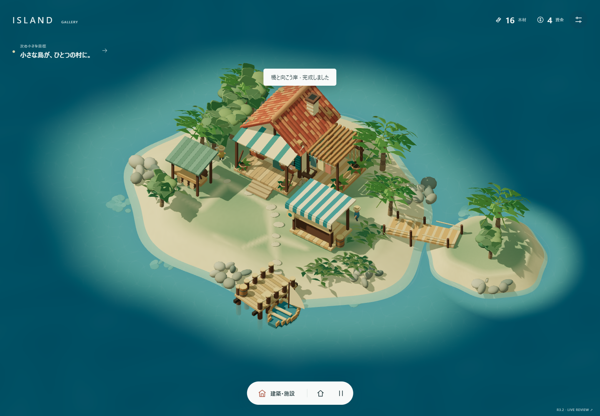
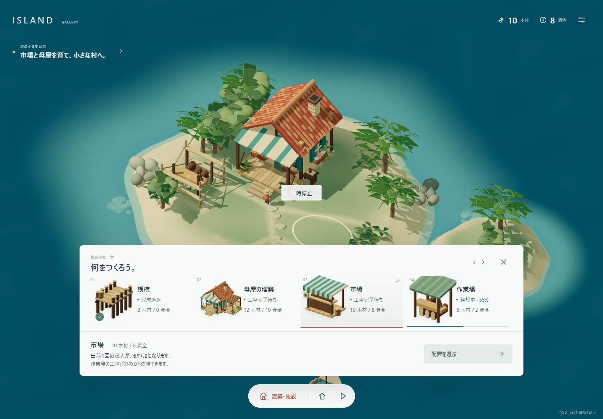
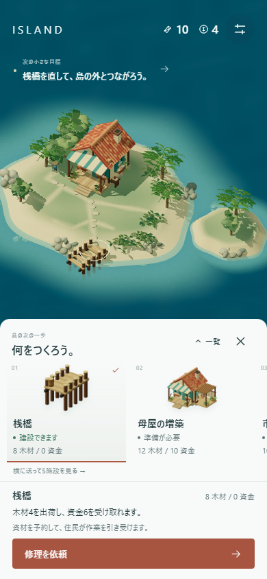
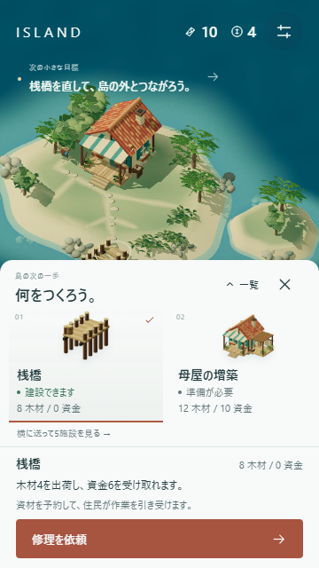
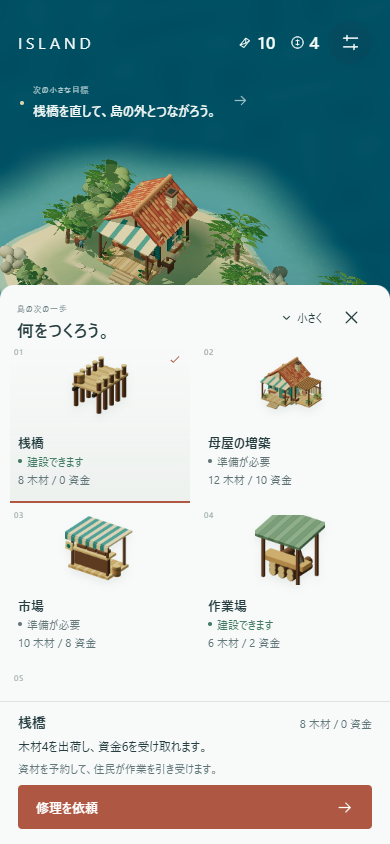
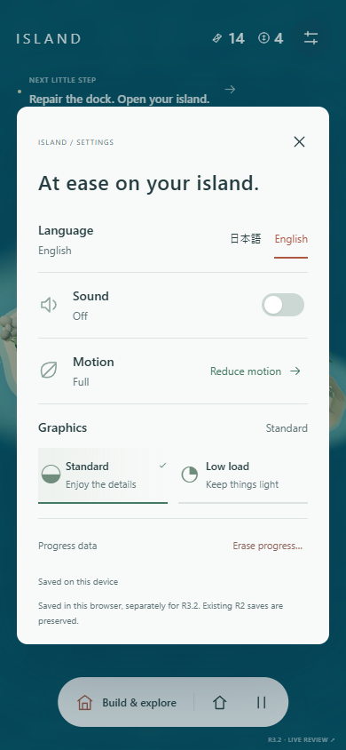

選ぶ → 依頼する
実モデルの候補から選び、実際の費用・不足・前提条件・工事待ちを表示。木材が足りない依頼は住民が採集から始めます。市場は2地点から配置を選び、確定時だけ支払います。
採用されたB Gallery Goldを、R2の本物の建設・資源・自動作業・保存へ接続しました。
今回はLive候補のReview。Craft / UI全体のHuman最終判定は未完了です。
VISUAL DIRECTION — HUMAN PASS
LIVE CRAFT / UI — HUMAN GATE PENDING

実モデルの候補から選び、実際の費用・不足・前提条件・工事待ちを表示。木材が足りない依頼は住民が採集から始めます。市場は2地点から配置を選び、確定時だけ支払います。
R2の自動採集・運搬・建設・再割当を直接使用。進捗線と完成feedbackは実際の工事に追従します。出荷・建設の優先変更や取消も、予約済み資材の規則に接続しました。
PCは下部のGallery。スマホは横送りtrayと必要時だけ展開する一覧。設定はGoldの項目別操作を保ち、言語・音・動き・画質を本物の設定へ接続しています。
5番目の「橋と向こう岸」はR2に元からある拡張です。新しい建物・資源・目標・進行は追加していません。旧保存の自動移行はせず、R3.2専用保存で最初から試遊できます。
木材10・資金8・桟橋修理済み・作業場55%の比較用サンプル。同じ初期カメラ・標準画質で比較します。R2とLiveは通常の3Dレンダラーを一時停止、Gold mockはR3.1の固定背景です。停止表示・選択リング・水面の時刻差は残しています。

比較サンプルは別build・保存無効です。通常一周の証拠とは区別しています。R2の旧一覧とGold/Liveの選択詳細の構造は異なり、全画素が一致する比較ではありません。




小型画面では展開中の一覧が島を多めに覆います。基本trayに戻す操作を残し、主操作・費用・効果を優先しました。実機iPhone / Androidの触り心地、発熱、SafariはHuman実機Gateです。
通常Liveルートを新規保存から実入力で操作。時間の加速・状態注入・UI非表示・録画専用の描画変更はありません。記録は等速、音声トラックなしです。
R2 / Liveを同一PC・同じ初期工事状態・同じカメラで順番に測定。各条件は1.2秒のwarmup後、7秒の通常作業です。UIは表示したまま。p95描画間隔・JS実行時間を併記します。
| 条件 | 画面 | R2 p95 | Live p95 | R2 JS ms/s | Live JS ms/s |
|---|
単一計測窓の観測値です。モバイル欄はWindows上のviewport / DPR模擬。GPU実時間・GPUメモリ・実機発熱/電池は未計測。PC結果から物理スマホの性能PASSとは判断していません。
R2 core 11 tests、ブラウザ14 QA群、監査修正3検査。建設予約/取消、出荷中reload、配置、JA/EN、設定、保存破損/書込失敗、2タブ競合を確認。
キーボードfocus、touch / pinch取消、360/390px主操作、横向き、hidden/pause、Reduced Motion、WebGL喪失、JS読込失敗、音が利用不可の場合を確認。
物理スマホ / Safari / iOS、実聴、screen reader、native 200%拡大、外部初見、長時間負荷。Humanの「育てたい感覚」とCraft/UI最終PASSは保留。
初回は専用の新規島です。設定の「進行を消去」はR3.2だけを初期化し、言語・音・動き・画質を保持します。旧R2の保存は読まず、書き換えません。